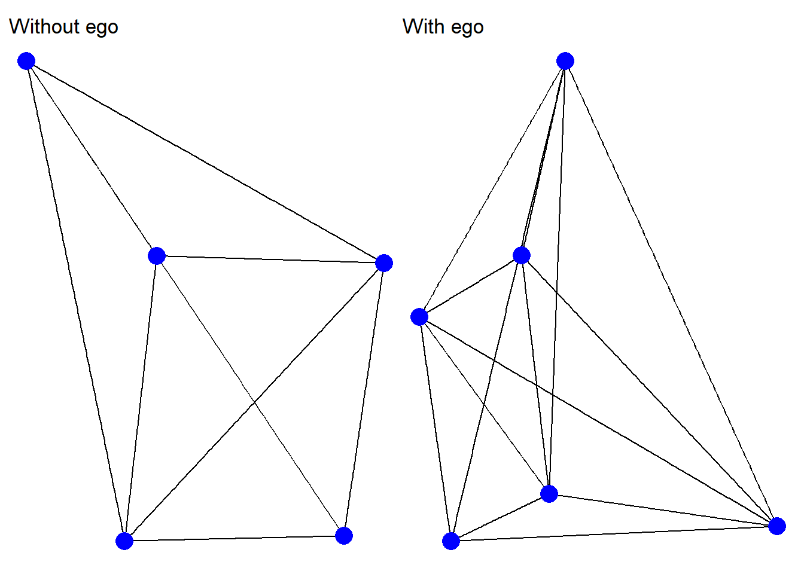
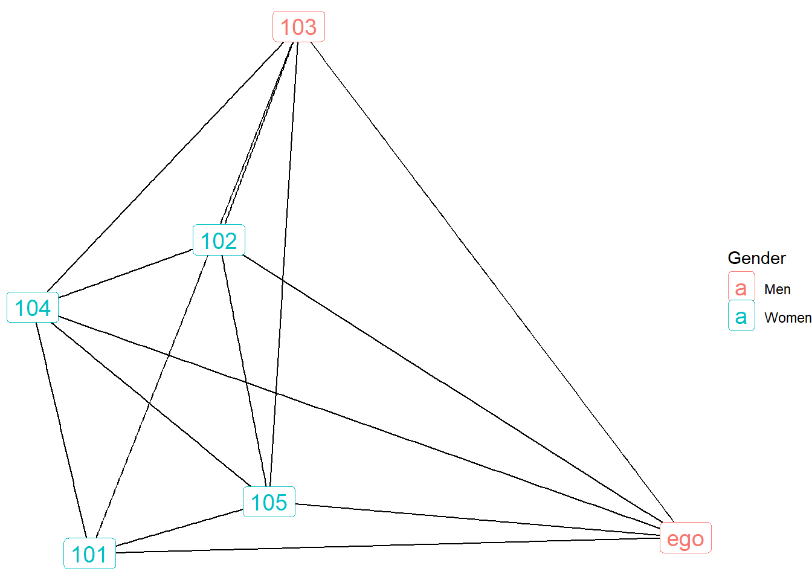
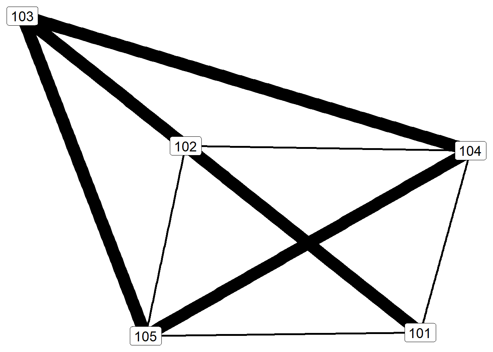
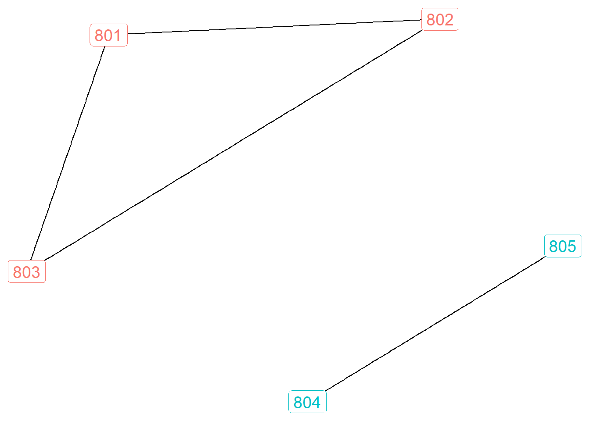
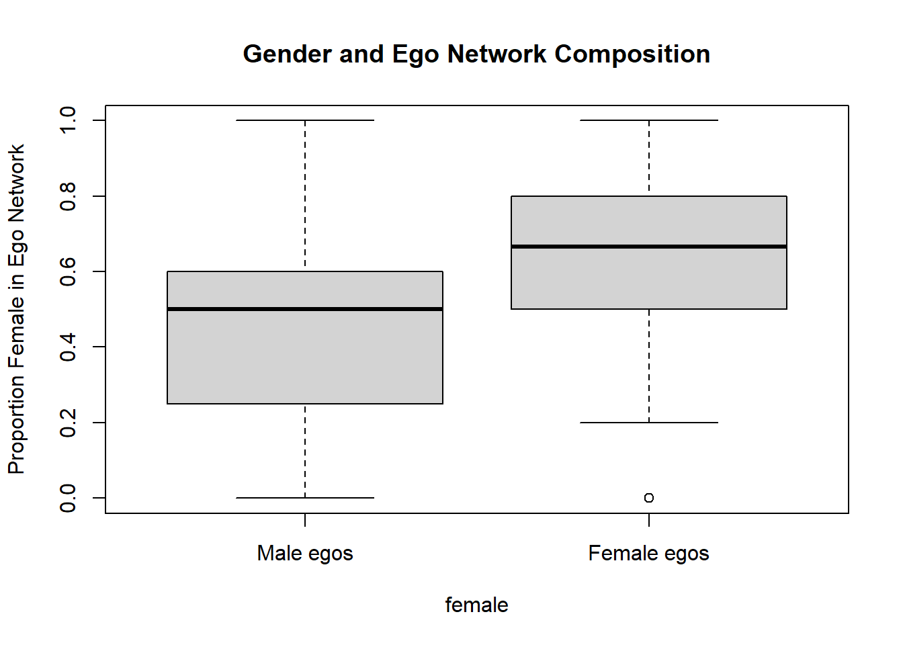

library(igraph)
library(ggraph)
library(tidyverse)
library(janitor)
library(gridExtra)
library(patchwork)
setwd("Q:/My Drive/teaching/SOC708/sna/network data/gss04")
load("gss_ego.rda")Ego network analysis
Analyzing ego network data
Once the egocentric network data files have been constructed, we can turn to analyzing the data. First we will add needed ego attributes to the ego list files, then we will show basic visualization strategies, and then we will examine metrics across ego, alter, and edge level characteristics.
The code below installs the relevant packages and loads the egonet data.
Adding ego attributes
Let’s begin by examining a single ego network. Below we save new igraph objects – one without ego and one with ego included – for the ego network number 10 in our larger list.
# Ego-network graph, ego_id = 10
gr.10 <- gr.list[["10"]]
# With ego included
gr.ego.10 <- gr.list.ego[["10"]]Before we visualize these networks, we need to address a problem with the weights in the gr.ego.10 network. When we constructed this network, weighted values were assigned to the alter-alter ties, but weighted values do not exist for the ego-alter ties. Let’s examine the edge attribute for weight.
E(gr.ego.10)$weight [1] 2 1 1 1 1 1 2 2 2 NA NA NA NA NAE(gr.ego.10)[.inc("ego")]$weight[1] NA NA NA NA NAThe last 4 values in the weight vector are NA. These are all of the ego-alter ties. So let’s apply a distinctive weight (3) for those ties.
(E(gr.ego.10)$weight <- E(gr.ego.10)$weight |>
replace_na(3)) [1] 2 1 1 1 1 1 2 2 2 3 3 3 3 3All of these weights have been filled in with values of 3. Now we can visualize the two versions of ego network number 10.
g1 <- ggraph(gr.10, layout = "kk") +
geom_edge_link() +
geom_node_point(size=5, color="blue") +
ggtitle("Without ego") +
theme_void()
g2 <- ggraph(gr.ego.10, layout = "kk") +
geom_edge_link() +
geom_node_point(size=5, color="blue") +
ggtitle("With ego") +
theme_void()
g1 + g2
The problem is that we have 288 different ego networks that need new values for missing weights. So we need a function that will apply a value of 3 to all ego-alter edges simultaneously. See below: 1) generate a weight replacement function and 2) apply that function to all graphs in the gr.list.ego object.
### Weight replacement function
weight_replace <- function(gr) {
E(gr)$weight <- E(gr)$weight |>
replace_na(3)
gr
}
### Apply the function to all graphs in the list
gr.list.ego <- gr.list.ego |>
map(weight_replace)Let’s check if it worked…
E(gr.list.ego[["10"]])$weight [1] 2 1 1 1 1 1 2 2 2 3 3 3 3 3…and it did! Values of 3 replaced the previously NA weights for the ego-alter ties in the number 10 ego network.
Note, though, that this is an issue for all ego attributes as well. Let’s check out the SEX attribute.
V(gr.list.ego[["10"]])$SEX[1] 2 2 1 2 2 NAThe last value, which refers to the ego attribute is NA. We will need a special function for this, because instead of applying a constant value (3), it will be necessary to apply a unique value for each ego based on what is in the ego attribute file.
With a little help from ChatGPT, I constructed the following function. With it, we can apply all of the values from the ego attribute file to the vertex attributes embedded within each ego network in the gr.list.ego object.
The function 1) identifies the appropriate row based on matching ego_id, 2) identifies the last entry in the vector of attributes (because ego is always the last vertex in these objects), and 3) applies the appropriate value in the ego attribute to the attribute vector within the graph list object. The final portion of the code assigns all of the relevant attribute names to a vector (“ego_attributes”), which it then feeds into the function and applies across the list via the imap command.
# function that applies ego attribute to all egos
add_ego_attributes <- function(gr, ego_id, ego_df, attributes) {
ego_row <- ego_df[ego_df$ego_id == ego_id, ]
ego_index <- length(V(gr))
for (attr in attributes) {
gr <- set_vertex_attr(gr, name = attr, index = ego_index, value = ego_row[[attr]])
}
return(gr)
}
# apply function across all vertex attributes
ego_attributes <- c("AGE", "EDUC", "SEX", "RACE", "PARTYID", "RELIG")
gr.list.ego <- imap(gr.list.ego, ~ add_ego_attributes(.x, .y, ego, ego_attributes))If this worked, then the NA values should be replaced with correct values from the ego attribute file.
V(gr.list.ego[["10"]])$AGE[1] 25 25 39 33 30 26V(gr.list.ego[["10"]])$EDUC[1] 3 3 3 4 4 14ego[3,1:3] ego_id AGE EDUC
3 10 26 14Indeed, the NAs have been replaced by the appropriate values.
Visualizing ego networks
Now that the correct values are in place, we can add attribute information to the network graphs. We’ll start with a graph of the number 10 network that includes ego, showing the gender of the nodes. Note that the gr.ego.10 object needs to be recreated now that we have added the new attribute information to the orginal list.
gr.ego.10 <- gr.list.ego[["10"]]
ggraph(gr.ego.10, layout = "kk") +
geom_edge_link() +
geom_node_label(aes(label = name, color = as.factor(SEX)), size=5) +
labs(color = "Gender") +
scale_color_discrete(labels = c("Men", "Women")) +
theme_void()
Here we see an interesting pattern, whereby ego number 10 is a man who listed one other man confidant along with four women confidants.
Next let’s examine the edge weights in the network without ego.
ggraph(gr.10, layout = "kk") +
geom_edge_link(aes(width = weight), show.legend = F) +
geom_node_label(aes(label = name), size=5) +
theme_void()
Ego is not represented in the graph, only relationships among alters. Thicker lines indicate especially close relationships, whereas thinner lines represent simply knowing one another.
One final representation to show is communities, which relies on algorithms to detect optimal groups based on modularity (if this is unfamiliar to you, check out my tutorial on community detection). Below I use the Louvain algorithm to identify modular groups. But this time, I will present the network for ego number 80.
gr.80 <- gr.list[["80"]]
louvain <- cluster_louvain(gr.80)
V(gr.80)$louvain <- membership(louvain)
ggraph(gr.80, layout = "kk") +
geom_edge_link() +
geom_node_label(aes(label = name, color = as.factor(louvain)), size=5, show.legend = F) +
theme_void()
These results show two different modular groups. Ego is connected to all of these alters, but the clique between <801,802,803> is not directly connected to <804,805>.
Adding network metrics
Ego attributes
Statistical analysis of ego networks can be conducted at three different levels: ego attributes, alter composition, and edge structure. These are what we call nested data structures: within each ego is a set of alters and within each group of alters is a set of relationships.
These three levels can be analyzed separately or combined. Below I present an example of a combined analysis whereby alter composition and edge structures are aggregated to the ego level. In other words, we’ll keep the data file at the ego level (with each row representing a unique ego) and add summary information about alters and alter ties to each row.
Let’s start by creating a new data matrix called e.attribute. Let’s recode ego attributes for gender (SEX) and race (RACE) into dummy variables (i.e., binary variables).
ego.attribute <- ego |>
mutate(FEMALE = case_when(SEX == 1 ~ 0,SEX == 2 ~ 1)) |>
mutate(NWHITE = if_else(RACE == 1, 0, 1)) |>
select(ego_id,FEMALE,NWHITE)
table(ego.attribute$FEMALE)
0 1
128 160 table(ego.attribute$NWHITE)
0 1
227 61 Alter composition
Next let’s examine alter attribute summaries for ego number 10. Let’s estimate this ego’s proportion women alters and the average alter education.
# extract the alter information for ego number 10
alter.10 <- alterlong |>
filter(ego_id==10)
# summarize each attribute
mean(alter.10$SEX == 2) # proportion women[1] 0.8mean(alter.10$EDUC, na.rm = TRUE) # average education[1] 3.4These results show that 80 percent of ego number 10’s alters are women and their average education is 3.4 (which is in the middle between high school graduate (3) and some college(4)).
This information can be combined into a single row of data.
alter.10 |>
summarise(prop.fem = mean(SEX == 2),
mean.educ = mean(EDUC))# A tibble: 1 × 2
prop.fem mean.educ
<dbl> <dbl>
1 0.8 3.4And more helpfully, this information can be summarized for all egos.
# apply to the entire set of attributes
a.summary <- alterlong |>
group_by(ego_id) |>
summarise(prop.fem = mean(SEX == 2),
mean.educ = mean(EDUC))
head(a.summary)# A tibble: 6 × 3
ego_id prop.fem mean.educ
<dbl> <dbl> <dbl>
1 3 0.5 5.5
2 5 0.75 6
3 10 0.8 3.4
4 12 1 4.5
5 16 0.5 8
6 30 0 6.33Edge structure
Finally, we can summarize network features for each alter based on the edges between alters. Again, we can start with estimates from a single ego network.
edge_density(gr.10)[1] 0.9components(gr.10)$no[1] 1centr_degree(gr.10)$centralization[1] 0.1Density in this ego network is equal to .9, which indicates that 90% of all possible ties are present. The components indicates that there is one single connected component among the alters. (Running this on the network for ego number 80 would reveal two different components. See above.) Finally, the degree centralization score is .1, which suggests that this graph lacks hierarchy (it is not centered around a “star” alter).
For the purpose of analysis, it will be necessary to obtain these estimates for all egos. This will require the use of the map function. Below I demonstrate how this is achieved for a single metric (edge_density).
head(map_dbl(gr.list, edge_density)) 3 5 10 12 16 30
0.8333333 0.8333333 0.9000000 0.0000000 0.0000000 1.0000000 Next let’s generate a single row of network metrics for a single ego network.
tibble(dens = edge_density(gr.10),
components(gr.10)$no,
deg.centr = centr_degree(gr.10)$centralization)# A tibble: 1 × 3
dens `components(gr.10)$no` deg.centr
<dbl> <dbl> <dbl>
1 0.9 1 0.1Let’s bring this all together by estimating these edge characteristics for all of the ego networks an combining them into a data frame.
e.summary <- gr.list |>
map_dfr(~ tibble(dens = edge_density(gr.10),
components(gr.10)$no,
deg.centr = centr_degree(gr.10)$centralization),
.id = "ego_id")
# make ego_id a numeric variable in the
e.summary$ego_id <- as.numeric(e.summary$ego_id)Now we can combine all three levels of data into a single summary file for each ego.
# join the attribute and edge structure summaries with the ego data
ego.attribute <- ego.attribute |>
left_join(a.summary, by = "ego_id") |>
left_join(e.summary, by = "ego_id")
colnames(ego.attribute) <- c("ego_id","female","nwhite","prop.fem","mean.educ",
"density","components","centralization")
glimpse(ego.attribute)Rows: 288
Columns: 8
$ ego_id <dbl> 3, 5, 10, 12, 16, 30, 35, 36, 46, 54, 57, 59, 61, 62, 6…
$ female <dbl> 0, 1, 0, 1, 0, 0, 1, 1, 0, 0, 0, 1, 0, 0, 1, 0, 1, 1, 1…
$ nwhite <dbl> 1, 1, 1, 1, 1, 0, 0, 0, 1, 0, 0, 0, 0, 0, 1, 1, 0, 0, 1…
$ prop.fem <dbl> 0.5000000, 0.7500000, 0.8000000, 1.0000000, 0.5000000, …
$ mean.educ <dbl> 5.500000, 6.000000, 3.400000, 4.500000, 8.000000, 6.333…
$ density <dbl> 0.9, 0.9, 0.9, 0.9, 0.9, 0.9, 0.9, 0.9, 0.9, 0.9, 0.9, …
$ components <dbl> 1, 1, 1, 1, 1, 1, 1, 1, 1, 1, 1, 1, 1, 1, 1, 1, 1, 1, 1…
$ centralization <dbl> 0.1, 0.1, 0.1, 0.1, 0.1, 0.1, 0.1, 0.1, 0.1, 0.1, 0.1, …Bivariate analyses
With a dataset like this, it is possible to conduct various statistical analyses. Below I show a simple analysis of variance (ANOVA) test to demonstrate one possibility.
ego.attribute$female <- factor(ego.attribute$female, labels = c("Male", "Female"))
summary(aov(prop.fem ~ female, data = ego.attribute)) Df Sum Sq Mean Sq F value Pr(>F)
female 1 3.284 3.284 45.83 7.32e-11 ***
Residuals 286 20.495 0.072
---
Signif. codes: 0 '***' 0.001 '**' 0.01 '*' 0.05 '.' 0.1 ' ' 1summary(aov(mean.educ ~ female, data = ego.attribute)) Df Sum Sq Mean Sq F value Pr(>F)
female 1 2.6 2.554 1.418 0.235
Residuals 286 515.1 1.801 summary(aov(density ~ female, data = ego.attribute)) Df Sum Sq Mean Sq F value Pr(>F)
female 1 4.000e-29 4.007e-29 1.251 0.264
Residuals 286 9.161e-27 3.203e-29 summary(aov(components ~ female, data = ego.attribute)) Df Sum Sq Mean Sq F value Pr(>F)
female 1 3.700e-29 3.699e-29 1.251 0.264
Residuals 286 8.457e-27 2.957e-29 summary(aov(centralization ~ female, data = ego.attribute)) Df Sum Sq Mean Sq F value Pr(>F)
female 1 9.600e-32 9.630e-32 1.251 0.264
Residuals 286 2.201e-29 7.697e-32 The results suggest that the gender of ego is only significantly associated with one of the network metrics: proportion women alters. This is unsurprising given what we know about gender homophily – i.e., people tend to associate with others who are similar based on their gender.
Below we can estimate those differences more precisely.
aggregate(prop.fem ~ female, data = ego.attribute, mean) female prop.fem
1 Male 0.4333333
2 Female 0.6482292On average, women report that nearly 65 percent of their confidants are also women, compared to 43 percent of men who say the same. Below presents a box plot visualization of these results.
boxplot(prop.fem ~ female, data = ego.attribute,
names = c("Male egos", "Female egos"),
ylab = "Proportion Female in Ego Network",
main = "Gender and Ego Network Composition")
These are simple bivariate analyses. More complex analyses based on multivariate and multilevel analyses are also possible with egocentric network data. Please check out the references below for more details and examples of these approaches.
References
This tutorial was built on insights and code from Raffaele Vacca. Please see his textbook (https://raffaelevacca.github.io/egocentric-r-book/) for a more detailed discussion of ego networks.
If you are interested in some of the substantive issues associated with the GSS “important matters” network data, check out the following resources.
Bearman, Peter, and Paolo Parigi. 2004. “Cloning Headless Frogs and Other Important Matters: Conversation Topics and Network Structure.” Social Forces 83(2):535–57.
Fischer, Claude S. 2009. “The 2004 GSS Finding of Shrunken Social Networks: An Artifact?” American Sociological Review 74(4):657–69.
McPherson, Miller, Lynn Smith-Lovin, and Matthew E. Brashears. 2006. “Social Isolation in America: Changes in Core Discussion Networks over Two Decades.” American Sociological Review 71(3):353–75.
Small, Mario Luis. 2017. Someone to Talk To. Oxford University Press.
Smith, Jeffrey A., Miller McPherson, and Lynn Smith-Lovin. 2014. “Social Distance in the United States: Sex, Race, Religion, Age, and Education Homophily among Confidants, 1985 to 2004.” American Sociological Review 79(3):432–56.